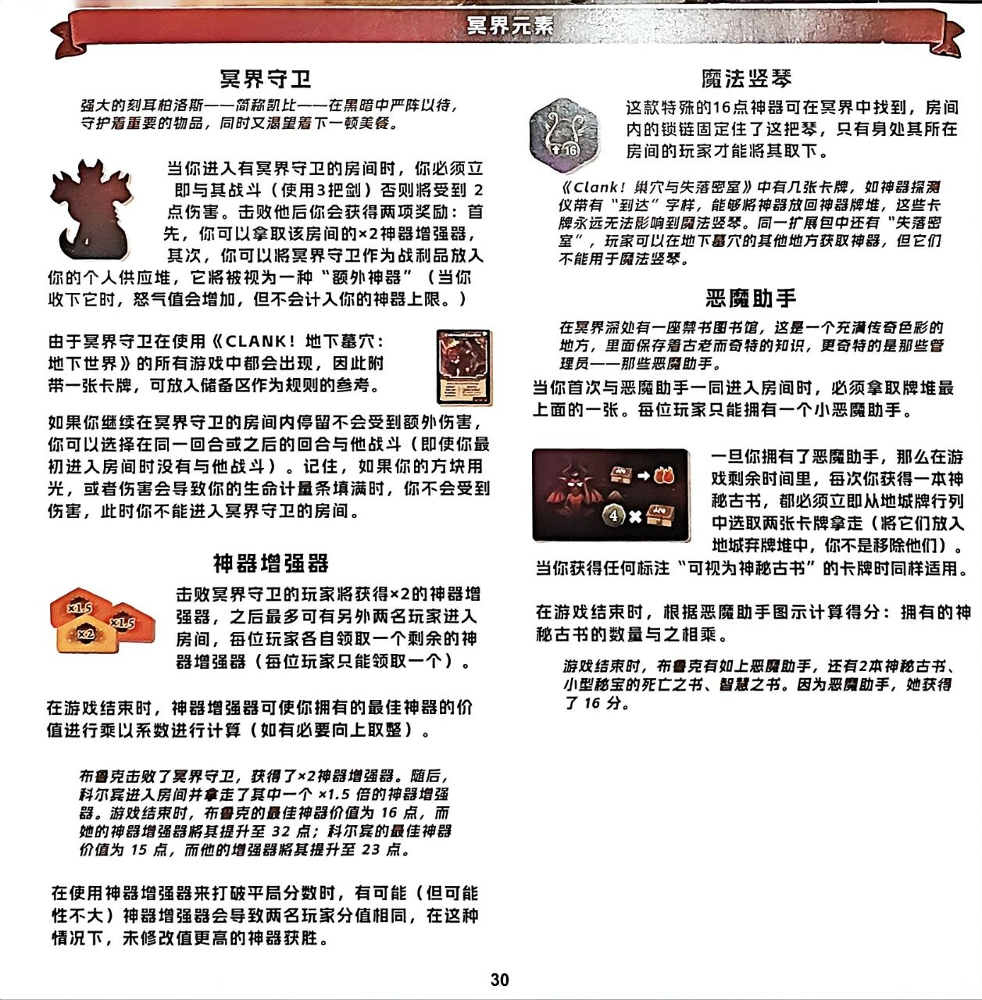
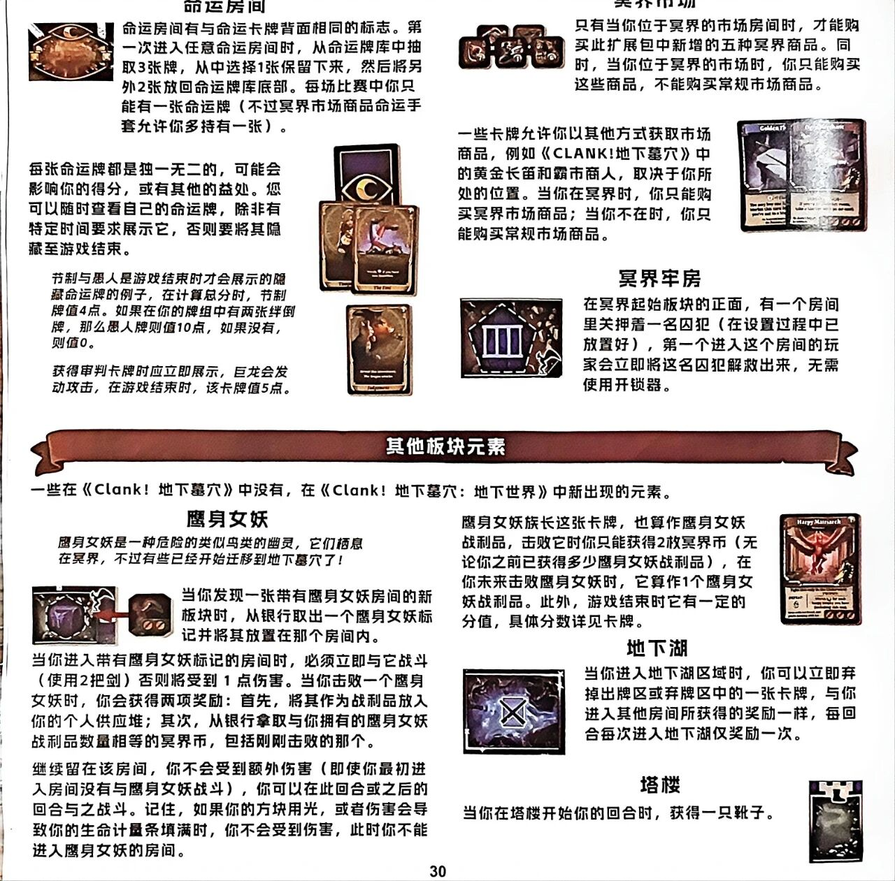
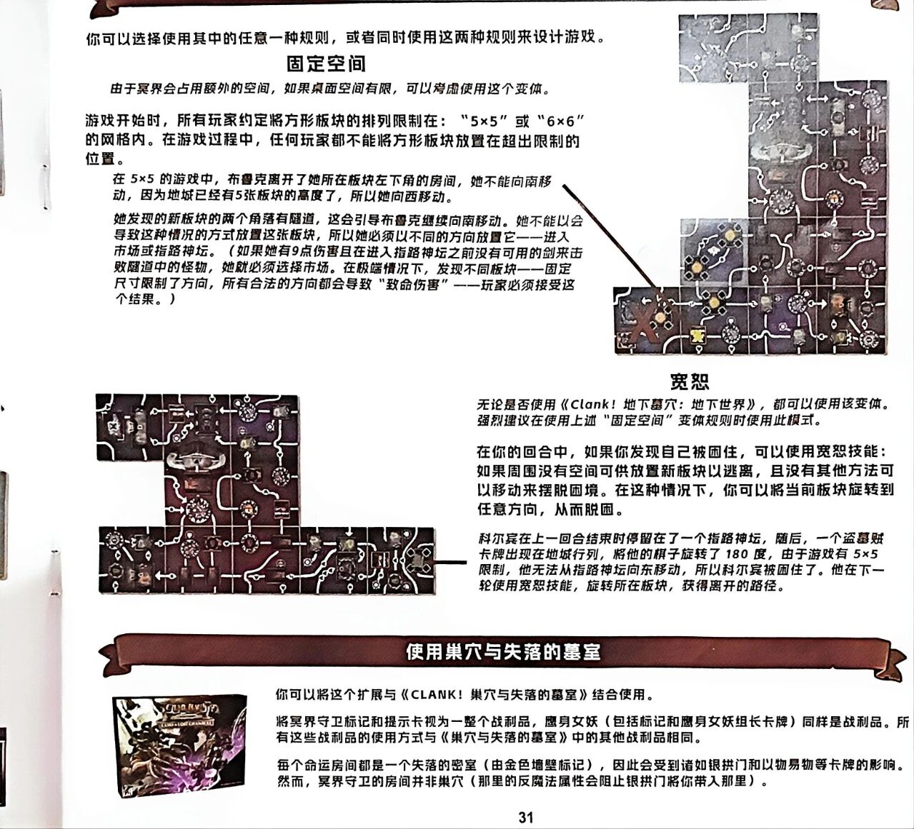
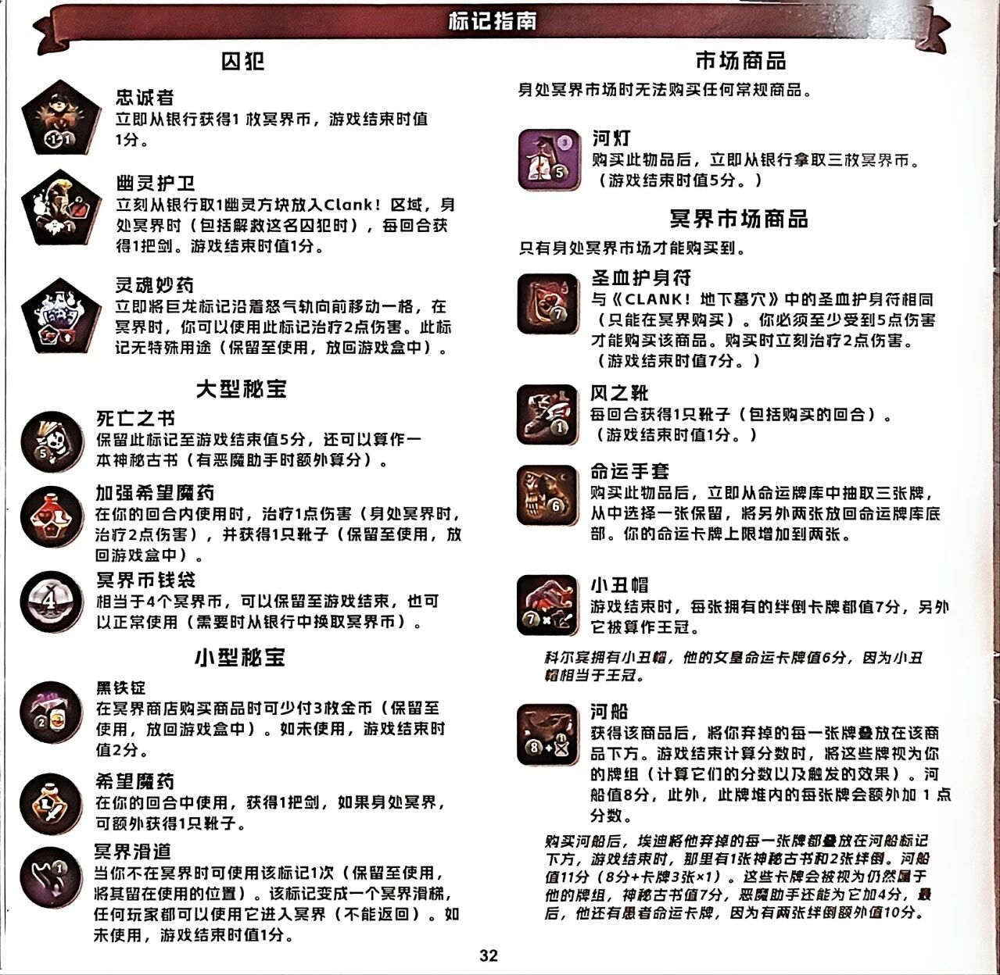

💀 CLANK! 地下墓穴:地下世界
Clank! Catacombs: Underworld · 设计:Paul Dennen · Dire Wolf 出品/Renegade Game Studios(官方中文规则书全文转录) · 2–4 人扩展(需配合《CLANK! 地下墓穴》)

本页整理自微信公众号「无忧桌游」《地下墓穴 扩展》所载官方简体中文规则书扫描件,逐页全文转录,扫描图随文嵌入——点击任意图片即可放大查看。规则内容归 Dire Wolf、Renegade Game Studios 及版权方所有,转录仅供个人学习查阅。基础游戏规则见本站《CLANK! 地下墓穴》规则页;另一扩展《CLANK! 冒险队》(5–6 人)见本站规则页。
整理说明:扫描共 4 图,对应规则书第 29–32 页(前两页页脚均印「30」,其一应为「29」之误,系原书排印如此);正文为简体照录;小节标题与〔图:…〕说明为整理所拟;文字与扫描图不符时以图为准。
冥界元素
冥界守卫
（斜体示例）强大的刻耳柏洛斯——简称凯比——在黑暗中严阵以待，守护着重要的物品，同时又渴望着下一顿美餐。
〔图 冥界守卫标志（三头犬造型的立体指示物）〕
当你进入有冥界守卫的房间时，你必须立即与其战斗（使用3把剑）否则将受到2点伤害。击败他后你会获得两项奖励：首先，你可以拿取该房间的×2神器增强器，其次，你可以将冥界守卫作为战利品放入你的个人供应堆，它将被视为一种“额外神器”（当你收下它时，怒气值会增加，但不会计入你的神器上限。）
由于冥界守卫在使用《CLANK!地下墓穴：地下世界》的所有游戏中都会出现，因此附带一张卡牌，可放入储备区作为规则的参考。
〔图 一张冥界守卫参考卡牌（红色恶魔插图与文字说明）〕
如果你继续在冥界守卫的房间内停留不会受到额外伤害，你可以选择在同一回合或之后的回合与他战斗（即使你最初进入房间时没有与他战斗）。记住，如果你的方块用光，或者伤害会导致你的生命计量条填满时，你不会受到伤害，此时你不能进入冥界守卫的房间。
神器增强器
〔图 三枚屋形神器增强器标志，分别标有「×1.5」「×1.5」「×2」〕
击败冥界守卫的玩家将获得×2的神器增强器，之后最多可有另外两名玩家进入房间，每位玩家各自领取一个剩余的神器增强器（每位玩家只能领取一个）。
在游戏结束时，神器增强器可使你拥有的最佳神器的价值进行乘以系数进行计算（如有必要向上取整）。
（斜体示例）布鲁克击败了冥界守卫，获得了×2神器增强器。随后，科尔宾进入房间并拿走了其中一个 ×1.5倍的神器增强器。游戏结束时，布鲁克的最佳神器价值为16点，而她的神器增强器将其提升至32点；科尔宾的最佳神器价值为15点，而他的增强器将其提升至23点。
在使用神器增强器来打破平局分数时，有可能（但可能性不大）神器增强器会导致两名玩家分值相同，在这种情况下，未修改值更高的神器获胜。
魔法竖琴
〔图 六边形石质神器标志，刻有竖琴图案与「↑16」〕
这款特殊的16点神器可在冥界中找到，房间内的锁链固定住了这把琴，只有身处其所在房间的玩家才能将其取下。
（斜体示例）《Clank!巢穴与失落密室》中有几张卡牌，如神器探测仪带有“到达”字样，能够将神器放回神器牌堆，这些卡牌永远无法影响到魔法竖琴。同一扩展包中还有“失落密室”，玩家可以在地下墓穴的其他地方获取神器，但它们不能用于魔法竖琴。
恶魔助手
（斜体示例）在冥界深处有一座禁书图书馆，这是一个充满传奇色彩的地方，里面保存着古老而奇特的知识，更奇特的是那些管理员——那些恶魔助手。
当你首次与恶魔助手一同进入房间时，必须拿取牌堆最上面的一张。每位玩家只能拥有一个小恶魔助手。
〔图 恶魔助手图示：恶魔助手形象；上排「神秘古书 → 两张红色卡牌」，下排「④ × 神秘古书」计分图标〕
一旦你拥有了恶魔助手，那么在游戏剩余时间里，每次你获得一本神秘古书，都必须立即从地城牌行列中选取两张卡牌拿走（将它们放入地城弃牌堆中，你不是移除他们）。
当你获得任何标注“可视为神秘古书”的卡牌时同样适用。
在游戏结束时，根据恶魔助手图示计算得分：拥有的神秘古书的数量与之相乘。
（斜体示例）游戏结束时，布鲁克有如上恶魔助手，还有2本神秘古书、小型秘宝的死亡之书、智慧之书。因为恶魔助手，她获得了16分。

命运房间
〔图 命运房间图块，圆形房间，中央印有月牙与眼睛标志〕
命运房间有与命运卡牌背面相同的标志。第一次进入任意命运房间时，从命运牌库中抽取3张牌，从中选择1张保留下来，然后将另外2张放回命运牌库底部。每场比赛中你只能有一张命运牌（不过冥界市场商品命运手套允许你多持有一张）。
每张命运牌都是独一无二的，可能会影响你的得分，或有其他的益处。您可以随时查看自己的命运牌，除非有特定时间要求展示它，否则要将其隐藏至游戏结束。
〔图 命运牌照片：一张印有月牙眼睛标志的牌背，两张正面朝上的命运牌（最前一张牌名可见"The Fool"），下方另有一张牌（牌名可见"Judgement"），牌面小字无法辨认〕
（斜体示例）节制与愚人是游戏结束时才会展示的隐藏命运牌的例子，在计算总分时，节制牌值4点。如果在你的牌组中有两张绊倒牌，那么愚人牌则值10点，如果没有，则值0。
（斜体示例）获得审判卡牌时应立即展示，巨龙会发动攻击，在游戏结束时，该卡牌值5点。
冥界市场
〔图 五种冥界商品的小方形图块标志〕
只有当你位于冥界的市场房间时，才能购买此扩展包中新增的五种冥界商品。同时，当你位于冥界的市场时，你只能购买这些商品，不能购买常规市场商品。
一些卡牌允许你以其他方式获取市场商品，例如《CLANK!地下墓穴》中的黄金长笛和霸市商人，取决于你所处的位置。当你在冥界时，你只能购买冥界市场商品；当你不在时，你只能购买常规市场商品。
〔图 两张卡牌照片，左卡牌名可见"Golden Fl…"（黄金长笛），右卡牌名被反光遮挡无法辨认，牌面文字过小无法辨认〕
冥界牢房
〔图 冥界起始板块正面的牢房房间，五边形，画有栅栏与囚犯剪影〕
在冥界起始板块的正面，有一个房间里关押着一名囚犯（在设置过程中已放置好），第一个进入这个房间的玩家会立即将这名囚犯解救出来，无需使用开锁器。
其他板块元素
一些在《Clank!地下墓穴》中没有，在《Clank!地下墓穴：地下世界》中新出现的元素。
鹰身女妖
（斜体示例）鹰身女妖是一种危险的类似鸟类的幽灵，它们栖息在冥界，不过有些已经开始迁移到地下墓穴了！
〔图 左侧房间图块与右侧鹰身女妖标记，中间以红色箭头相连〕
当你发现一张带有鹰身女妖房间的新板块时，从银行取出一个鹰身女妖标记并将其放置在那个房间内。
当你进入带有鹰身女妖标记的房间时，必须立即与它战斗（使用2把剑）否则将受到1点伤害。当你击败一个鹰身女妖时，你会获得两项奖励：首先，将其作为战利品放入你的个人供应堆；其次，从银行拿取与你拥有的鹰身女妖战利品数量相等的冥界币，包括刚刚击败的那个。
继续留在该房间，你不会受到额外伤害（即使你最初进入房间没有与鹰身女妖战斗），你可以在此回合或之后的回合与之战斗。记住，如果你的方块用光，或者伤害会导致你的生命计量条填满时，你不会受到伤害，此时你不能进入鹰身女妖的房间。
〔图 "Harpy Monarch"（鹰身女妖族长）卡牌，底部有三个红色靴子图标，牌面小字无法辨认〕
鹰身女妖族长这张卡牌，也算作鹰身女妖战利品，击败它时你只能获得2枚冥界币（无论你之前已获得多少鹰身女妖战利品），在你未来击败鹰身女妖时，它算作1个鹰身女妖战利品。此外，游戏结束时它有一定的分值，具体分数详见卡牌。
地下湖
〔图 地下湖房间图块，深色湖面中央印有X形标志〕
当你进入地下湖区域时，你可以立即弃掉出牌区或弃牌区中的一张卡牌，与你进入其他房间所获得的奖励一样，每回合每次进入地下湖仅奖励一次。
塔楼
当你在塔楼开始你的回合时，获得一只靴子。
〔图 塔楼房间图块，窄长形，顶部印有黑色靴子图标〕

你可以选择使用其中的任意一种规则，或者同时使用这两种规则来设计游戏。
固定空间
由于冥界会占用额外的空间，如果桌面空间有限，可以考虑使用这个变体。
游戏开始时，所有玩家约定将方形板块的排列限制在：“5×5”或“6×6”的网格内。在游戏过程中，任何玩家都不能将方形板块放置在超出限制的位置。
（斜体示例）在5×5的游戏中，布鲁克离开了她所在板块左下角的房间，她不能向南移动，因为地城已经有5张板块的高度了，所以她向西移动。
（斜体示例）她发现的新板块的两个角落有隧道，这会引导布鲁克继续向南移动。她不能以会导致这种情况的方式放置这张板块，所以她必须以不同的方向放置它——进入市场或指路神坛。（如果她有9点伤害且在进入指路神坛之前没有可用的剑来击败隧道中的怪物，她就必须选择市场。在极端情况下，发现不同板块——固定尺寸限制了方向，所有合法的方向都会导致“致命伤害”——玩家必须接受这个结果。）
〔图 页面右上方大幅版图照片，展示按5×5限制排列的地下墓穴方形板块（可见房间、隧道、市场、指路神坛等图案），一条长斜线从图中板块指向左侧斜体示例文字〕
宽恕
〔图 页面左侧大幅版图照片，展示宽恕示例中的方形板块排布，一条斜线指向右侧斜体示例文字〕
无论是否使用《Clank!地下墓穴：地下世界》，都可以使用该变体。强烈建议在使用上述“固定空间”变体规则时使用此模式。
在你的回合中，如果你发现自己被困住，可以使用宽恕技能：如果周围没有空间可供放置新板块以逃离，且没有其他方法可以移动来摆脱困境。在这种情况下，你可以将当前板块旋转到任意方向，从而脱困。
（斜体示例）科尔宾在上一回合结束时停留在了一个指路神坛，随后，一个盗墓贼卡牌出现在地城行列，将他的棋子旋转了180度，由于游戏有5×5限制，他无法从指路神坛向东移动，所以科尔宾被困住了。他在下一轮使用宽恕技能，旋转所在板块，获得离开的路径。
使用巢穴与失落的墓室
〔图 《Clank!巢穴与失落的墓室》扩展包装盒照片，盒面为紫黑色调怪物插画，印有CLANK!标志与英文副标题〕
你可以将这个扩展与《CLANK!巢穴与失落的墓室》结合使用。
将冥界守卫标记和提示卡视为一整个战利品，鹰身女妖（包括标记和鹰身女妖组长卡牌）同样是战利品。所有这些战利品的使用方式与《巢穴与失落的墓室》中的其他战利品相同。
每个命运房间都是一个失落的密室（由金色墙壁标记），因此会受到诸如银拱门和以物易物等卡牌的影响。然而，冥界守卫的房间并非巢穴（那里的反魔法属性会阻止银拱门将你带入那里）。

标记指南
囚犯
忠诚者
〔图 五边形囚犯代币，戴帽囚犯人像，底部有"+1"硬币小图与"1"圆标〕
立即从银行获得1枚冥界币，游戏结束时值1分。
幽灵护卫
〔图 五边形囚犯代币，幽灵护卫形象，带幽灵小图与"1"圆标〕
立刻从银行取1幽灵方块放入Clank!区域，身处冥界时（包括解救这名囚犯时），每回合获得1把剑。游戏结束时值1分。
灵魂妙药
〔图 五边形囚犯代币，冒泡的药剂瓶图案，带小盾形标〕
立即将巨龙标记沿着怒气轨向前移动一格，在冥界时，你可以使用此标记治疗2点伤害。此标记无特殊用途（保留至使用，放回游戏盒中）。
大型秘宝
死亡之书
〔图 圆形代币，翻开的书与骷髅图案，左下角"5"圆标〕
保留此标记至游戏结束值5分，还可以算作一本神秘古书（有恶魔助手时额外算分）。
加强希望魔药
〔图 圆形代币，红色药剂瓶图案〕
在你的回合内使用时，治疗1点伤害（身处冥界时，治疗2点伤害），并获得1只靴子（保留至使用，放回游戏盒中）。
冥界币钱袋
〔图 圆形代币，钱袋图案，上有"4"〕
相当于4个冥界币，可以保留至游戏结束，也可以正常使用（需要时从银行中换取冥界币）。
小型秘宝
黑铁锭
〔图 圆形代币，金属锭图案，左下"2"圆标与金币小图〕
在冥界商店购买商品时可少付3枚金币（保留至使用，放回游戏盒中）。如未使用，游戏结束时值2分。
希望魔药
〔图 圆形代币，药剂瓶与短剑图案，带"1"圆标〕
在你的回合中使用，获得1把剑，如果身处冥界，可额外获得1只靴子。
冥界滑道
〔图 圆形代币，弯曲滑道图案，带"1"圆标〕
当你不在冥界时可使用该标记1次（保留至使用，将其留在使用的位置）。该标记变成一个冥界滑梯，任何玩家都可以使用它进入冥界（不能返回）。如未使用，游戏结束时值1分。
市场商品
身处冥界市场时无法购买任何常规商品。
河灯
〔图 紫底方形商品图标，河灯图案，右上角"3"水晶标，右下角"5"圆标〕
购买此物品后，立即从银行拿取三枚冥界币。（游戏结束时值5分。）
冥界市场商品
只有身处冥界市场才能购买到。
圣血护身符
〔图 方形商品图标，红色护身符图案，右下角"7"圆标〕
与《CLANK!地下墓穴》中的圣血护身符相同（只能在冥界购买）。你必须至少受到5点伤害才能购买该商品。购买时立刻治疗2点伤害。（游戏结束时值7分。）
风之靴
〔图 方形商品图标，靴子图案，右下角"1"圆标〕
每回合获得1只靴子（包括购买的回合）。（游戏结束时值1分。）
命运手套
〔图 方形商品图标，手套图案，右下角"6"圆标〕
购买此物品后，立即从命运牌库中抽取三张牌，从中选择一张保留，将另外两张放回命运牌库底部。你的命运卡牌上限增加到两张。
小丑帽
〔图 方形商品图标，小丑帽图案，左下角"7"圆标与"×"小图〕
游戏结束时，每张拥有的绊倒卡牌都值7分，另外它被算作王冠。
（斜体示例）科尔宾拥有小丑帽，他的女皇命运卡牌值6分，因为小丑帽相当于王冠。
河船
〔图 方形商品图标，河船图案，左下角"8"圆标与"+1"小图〕
获得该商品后，将你弃掉的每一张牌叠放在该商品下方。游戏结束计算分数时，将这些牌视为你的牌组（计算它们的分数以及触发的效果）。河船值8分，此外，此牌堆内的每张牌会额外加1点分数。
（斜体示例）购买河船后，埃迪将他弃掉的每一张牌都叠放在河船标记下方，游戏结束时，那里有1张神秘古书和2张绊倒。河船值11分（8分+卡牌3张×1）。这些卡牌会被视为仍然属于他的牌组，神秘古书值7分，恶魔助手还能为它加4分，最后，他还有愚者命运卡牌，因为有两张绊倒额外值10分。